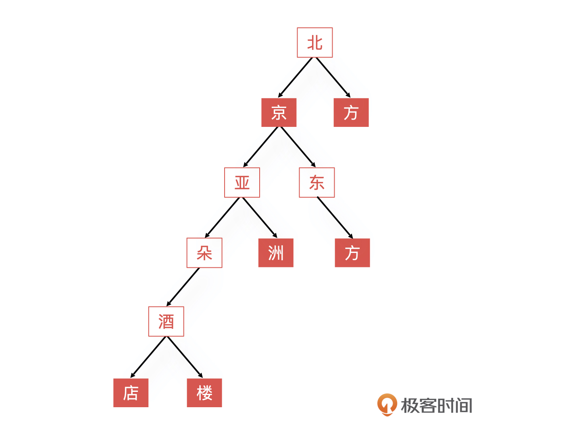
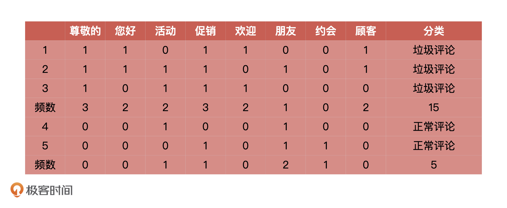
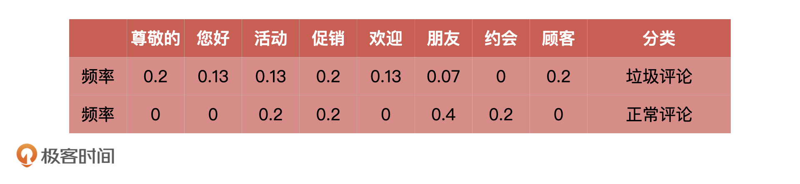

- 00 开篇词 你好，产品经理！你的未来价值壁垒在哪儿？.md
- 01 行业视角：产品经理眼中的人工智能.md
- 02 个人视角：成为AI产品经理，要先搞定这两个问题.md
- 03 技术视角：AI产品经理需要懂的技术全景图.md
- 04 过来人讲：成为AI产品经理的两条路径.md
- 05 通过一个 AI 产品的落地，掌握产品经理工作全流程.md
- 06 AI 模型的构建过程是怎样的？（上）.md
- 07 AI模型的构建过程是怎样的（下）.md
- 08 算法全景图：AI产品经理必须要懂的算法有哪些？.md
- 09 K近邻算法：机器学习入门必学算法.md
- 10 线性回归：教你预测，投放多少广告带来的收益最大.md
- 11 逻辑回归：如何预测用户是否会购买商品？.md
- 12 朴素贝叶斯：让AI告诉你，航班延误险该不该买？.md
- 13 决策树与随机森林：如何预测用户会不会违约？.md
- 14 支持向量机：怎么预测股票市场的涨与跌？.md
- 15 K-means 聚类算法：如何挖掘高价值用户？.md
- 16 深度学习：当今最火的机器学习技术，你一定要知道.md
- 17 模型评估：从一个失控的项目看优秀的产品经理如何评估AI模型？.md
- 18 核心技能：产品经理评估模型需要关注哪些指标？.md
- 19 模型性能评估（一）：从信用评分产品看什么是混淆矩阵？.md
- 20 模型性能评估（二）：从信用评分产品看什么是KS、AUC？.md
- 21 模型性能评估（三）：从股价预测产品看回归算法常用的评估指标.md
- 22 模型稳定性评估：如何用PSI来评估信用评分产品的稳定性？.md
- 23 模型监控：产品经理如何建设算法模型监控指标体系？.md
- 24 推荐类产品（一）：推荐系统产品经理的工作职责与必备技能.md
- 25 推荐类产品（二）：从0打造电商个性化推荐系统产品.md
- 26 预测类产品（一）：用户复购意向预测的底层逻辑是什么？.md
- 27 预测类产品（二）：从0打造一款预测用户复购意向的产品.md
- 28 预测类产品（三）：从0打造一款“大白信用评分产品”.md
- 29 自然语言处理产品：从0打造一款智能客服产品.md
- 30 AI产品经理，你该如何提升自己的价值？.md
- 31 AI产品经理面试，这些问题你必须会答！.md
- 春节加餐1 用户增长模型：怎么利用AI技术判断新渠道性价比？.md
- 春节加餐2 一次答疑，带你回顾模型评估的所有基础概念.md
- 期中周测试题 ，你做对了吗？.md
- 期中答疑 AI产品经理热门问题答疑合集.md
- 结束语 唯一不变的，就是变化本身！.md
期中周测试题 ，你做对了吗？
你好，我是海丰。今天，我来公布一下主观题的答案。
我们先来回顾一下题目：
假如，你现在是一家电商平台的产品经理，负责点评系统的产品设计，现在有一个需求是要通过计算将海量评论中的垃圾评论（如，打广告的情况）过滤出来，你会怎么思考和设计产品？
我们知道，用户评论数据都是非结构信息，所以我们首先要做的就是将非结构化数据转化成结构化的。在文本分析中，我们可以使用“词向量”来表示文本中的数据。
举个例子，如果用户评论中出现某些特定词，比如“尊敬的”“您好”“促销”等等，它们很有可能属于垃圾评论。那我们就可以用这些词来构成“词向量”，具体怎么做呢？下面，我分三步来讲。
第一步：对评论进行分词。
分词是文本分析的首要工作，“基于字符串匹配”是最简单的分词方法。举个例子，现在有一句短语叫做“北京亚朵酒店”，以及我们事先积累的词库。
首先，我们可以提出短语的第一个字符串“北”，然后将短语中从“北”字开头的后续的内容与词库中收录的词语进行匹配。当匹配到了词库中的词语“北京”后，就可以停止匹配了，“京”字也就作为终止字符。这样，我们就从“北京亚朵酒店”中提出来了第一个词语“北京”。
接着，我们就可以把“北京”这个词从原始短语中删除，从“亚”字重新开始匹配。

根据字符串匹配的方式，在已知业务常见词语的基础之上，我们是可以将评论中的所有词汇都切分出来的，切分的结果如上图所示。
当然，我这里使用“基于字符串匹配”的分词方式讲解是为了让你更容易理解，在实际工作中，我们通常会采用“正逆向最大匹配”的分词算法，以及如果有更为复杂的短语，如“武汉市长江大桥”，就要结合概率来进行分词了。
第二步：构建训练集和测试集。
解决了分词问题后，垃圾评论分类产品的构建的工作就已经完成一半儿了。接下来，就是构建训练集和测试集了。
首先，我们需要两组评论，一组用于训练，一组用于测试。目前，历史评论的样本数据我们有了，样本数据的标签（正常评论、垃圾评论）我们也有了，那么，只需要确定特征以后，就可以带入分类算法进行训练了。
那么特征是什么呢？其实就是把分词后的每个“词语”在样本中的词频（出现的次数）。
比如说，下面是5 个评论统计得到的词频统计表。其中“0”表示某个词语在评论中没有出现。“1”则表示某个词语在评论中出现了。

第三步：计算概率。
根据刚才得到的表格，我们能够计算出“尊敬的”“你好”这些词语在垃圾评论和正常评论中出现的概率，我把它们总结在了下面的表格里。这个时候，当“顾客”出现在新评论中的，我们就认为它是垃圾评论的概率是 0.2。

这样一来，当有了新的评论出现的时候，我们首先对它进行分词，根据概率公式 数学公式: \( p=\\sum\_{i=1}^{8}{c\_{i}p\_{i}} \)计算新评论属于垃圾评论的概率。
比如，对于一个含有“尊敬的”、“促销”、“朋友”、“约会”、“顾客”的评论来说。
属于垃圾评论的概率是：
数学公式: \( 0.67 = 1 \\times 0.2 + 0 \\times 0.13 + 0 \\times 0.13 + 1 \\times 0.2 + 0 \\times 0.13 + 1 \\times 0.07 + 1 \\times 0+1 \\times 0.2 \)
属于正常评论的概率是：
数学公式: \( 0.8 = 1 \\times 0 + 0 \\times 0 + 0 \\times 0 + 1 \\times 0.2 + 0 \\times 0 + 1 \\times 0.4 + 1 \\times 0.2+1 \\times 0 \)
由于 0.8 大于 0.67，所以新评论属于正常评论。
好了，主观题的解题思路就是这样了。那么，期中周马上就要结束了，希望你能尽快巩固好我们所学的内容。我们下节课见！
© 2019 - 2023 Liangliang Lee. Powered by gin and hexo-theme-book.